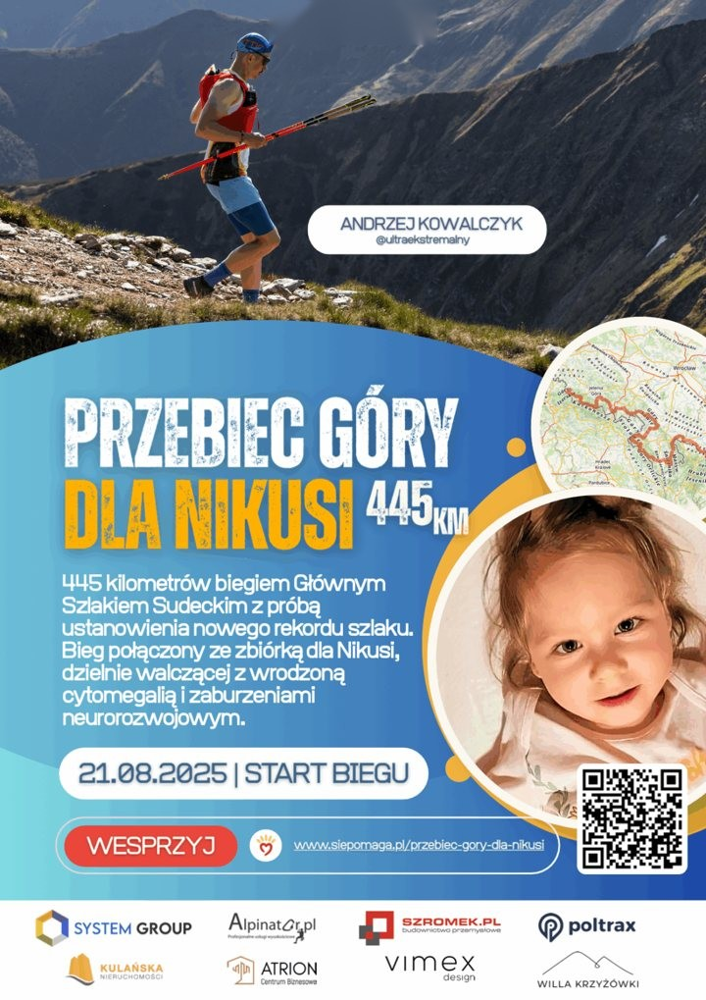
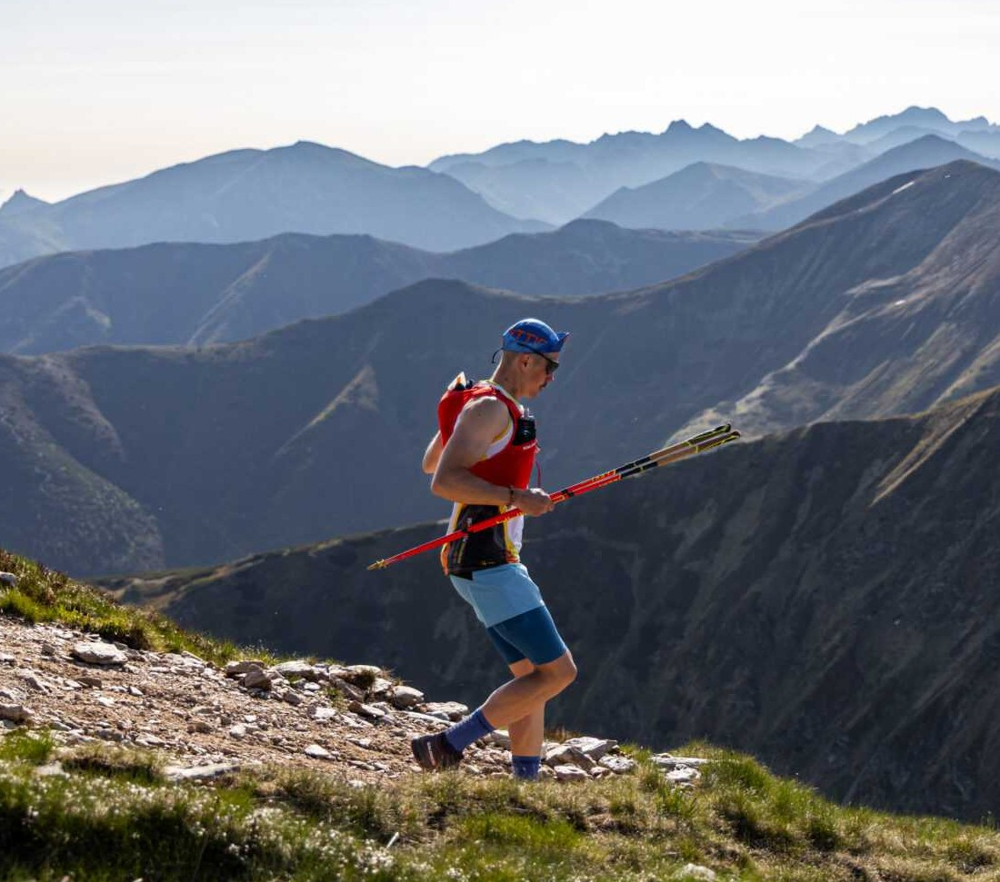

Wyzwania
21–24 sierpnia 2025, Sudety
Główny Szlak Sudecki
445 km z Prudnika do Świeradowa-Zdroju. Trzeci najszybszy czas w historii szlaku, a każdy kilometr był dla dwuletniej Nikusi.
445km
86:51
- Czas w historii szlaku
- 3.
- Przewyższenie
- 14 181 m
- Sen
- 100 min

Cztery dni przez Sudety
Wystartowałem 21 sierpnia o 7:00 w Prudniku i biegłem na zachód: przez Masyw Śnieżnika, Góry Stołowe i Karkonosze, aż do Świeradowa-Zdroju. Na mecie byłem w niedzielę wieczorem, po 86 godzinach i 51 minutach.
Oficjalnie szlak ma 445 km i 14 181 m podejść, mój zegarek pokazał 452 km. Przez cały ten czas spałem około 100 minut. Szybciej przebiegli go tylko Łukasz Wróbel i Rafał Bielawa.
Po drodze zjadłem około 120 pierogów i wypiłem 8 litrów rosołu.
Przebiec góry dla Nikusi
Bieg połączyłem ze zbiórką dla dwuletniej Nikusi z Tarnowskich Gór. Cel został przekroczony o jedną trzecią.
Prudnik → Świeradów-Zdrój
Pomoc
Porozmawiajmy o tym, co możemy zrobić razem.
Szukasz partnera dla swojej marki lub prelegenta na wydarzenie? Napisz kilka słów o swoim pomyśle. Dopasujemy formę współpracy do Twoich potrzeb.